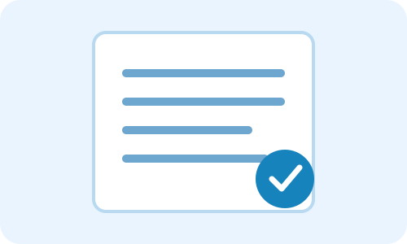

Generasi Muda dan Masa Depan
Remaja dapat menjaga masa depan dengan memahami risiko, menjaga kesehatan, dan berani mengambil keputusan yang aman.
Bacaan singkat untuk membangun kesadaran dan kepedulian.

Remaja dapat menjaga masa depan dengan memahami risiko, menjaga kesehatan, dan berani mengambil keputusan yang aman.
Teman dapat memberi pengaruh positif maupun negatif. Pertemanan sehat menghargai keputusan untuk menolak hal berbahaya.
Komunikasi terbuka, edukasi, dan lingkungan yang mendukung membantu pencegahan sejak dini.